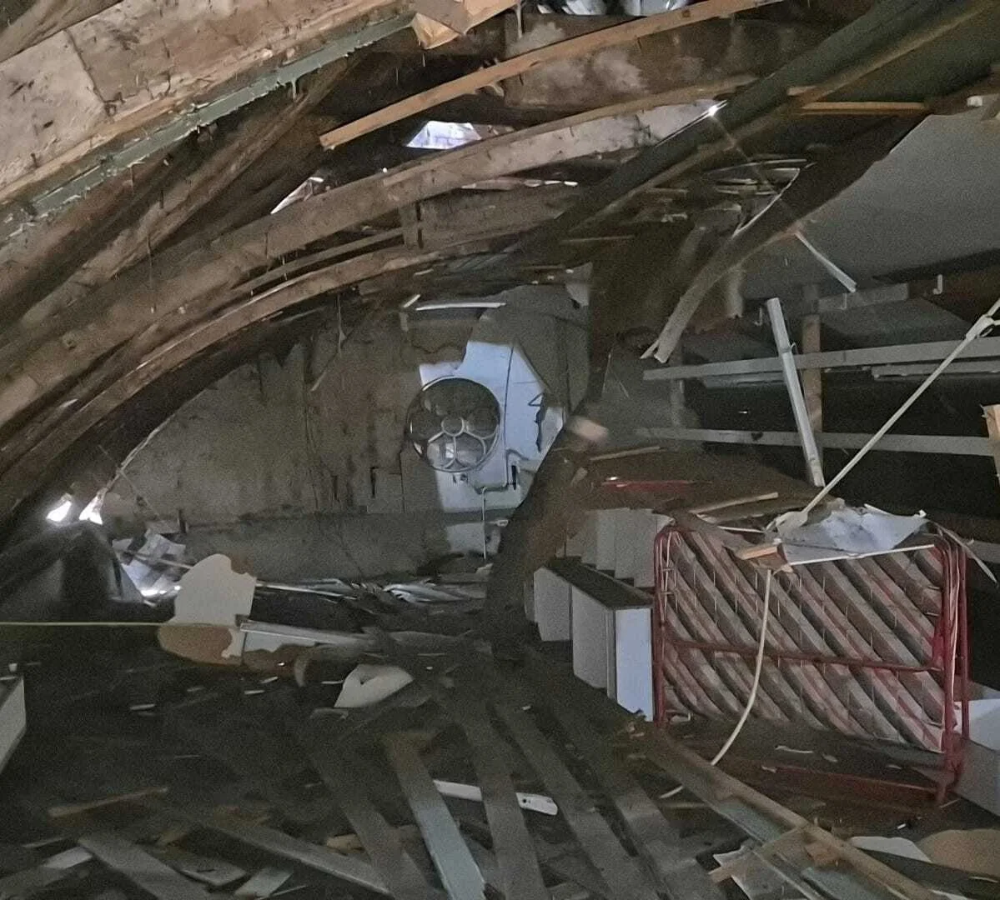
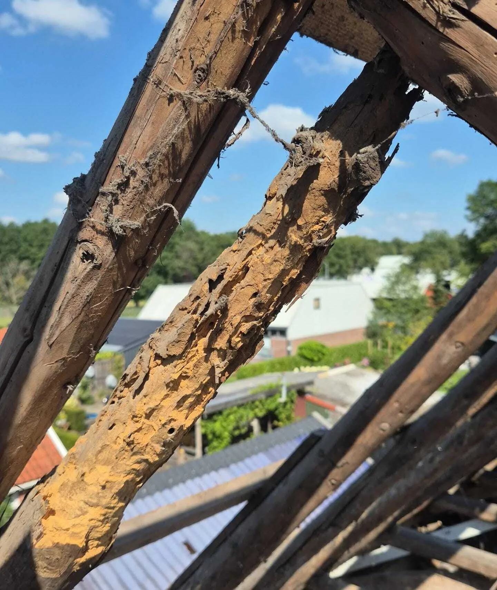
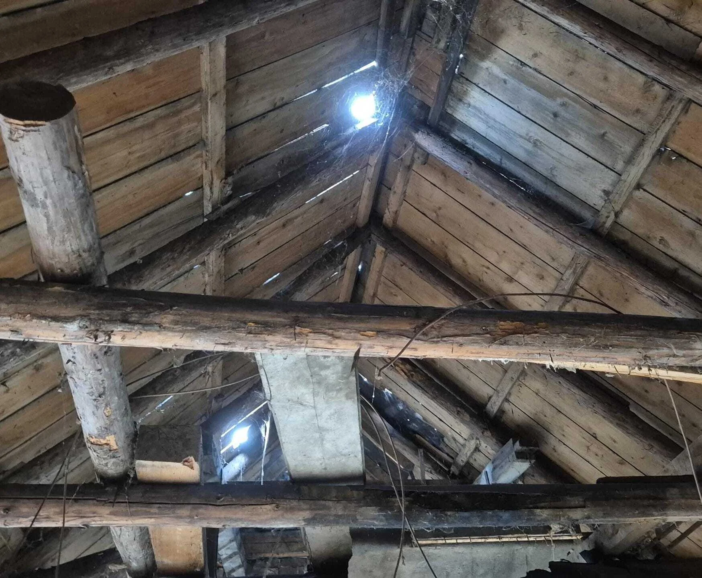
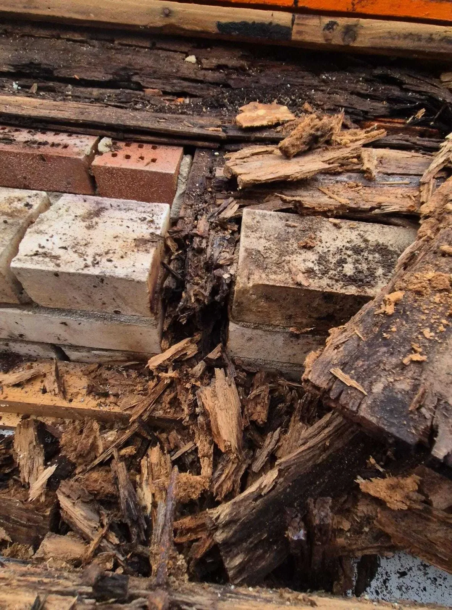
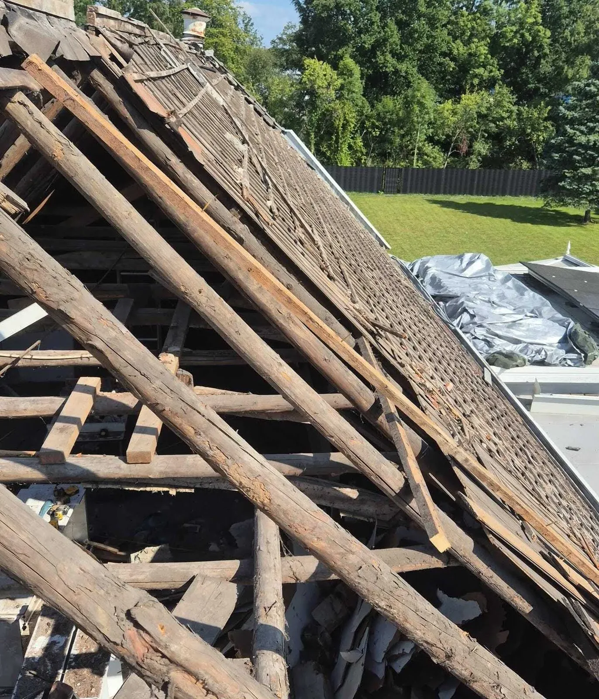
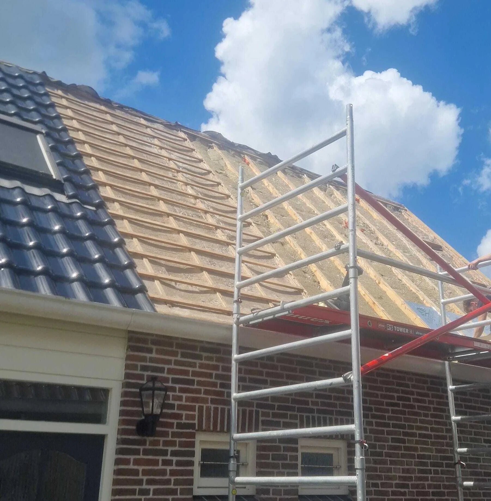

Cluster 20
Constructieve dakproblemen
Een thematische kennisbanksectie met een pillarpagina en ondersteunende artikelen. Begin bij de hoofdpagina voor overzicht, of kies direct het specifieke onderwerp dat past bij uw situatie.

Artikelen in dit cluster
De pillar pagina geeft het overzicht. De ondersteunende blogs behandelen deelvragen, signalen, kosten, risico's en praktische keuzes.
Constructieve dakproblemen: signalen, oorzaken en risico’sPillar pagina
 Binnensignalen van problemen in de dakconstructieOndersteunende blog
Binnensignalen van problemen in de dakconstructieOndersteunende blog

Constructieve schade door langdurige daklekkageOndersteunende blog
Doorbuiging van dakconstructies: oorzaken en risico’sOndersteunende blog
Houtrot in dakconstructies: oorzaken en gevolgenOndersteunende blogBinnensignalen van problemen in de dakconstructieOndersteunende blog

Verzakking van dakvlakken en problemen met waterafvoerOndersteunende blog
Vocht in dakisolatie en constructieve risico’sOndersteunende blog